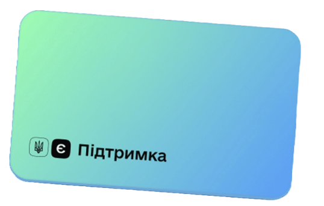
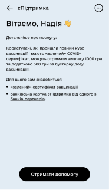
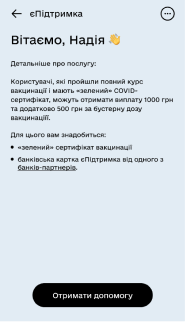
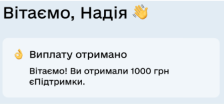
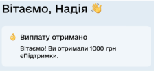

Information architecture, website content, app flow
eSupport
↓↓↓
During the pre-war period, when COVID-19 was still around, Volodymyr Zelensky implemented the eSupport
social assistance program. Fully vaccinated Ukrainians received a payment of 1000 UAH from the government,
which could be spent in business categories most affected by the lockdowns.

I had 3 days to understand the program from scratch and create content to communicate about it for Ukraine.
I gathered information from representatives of the involved ministries who were responsible for the project on their end.
I used the information I gathered to write a technical text, which I turned into the main communication material.
[ WEBSITE ]
Knowing that user attention on website text resembles the letter F, I structured the information to highlight the most important points at the peak of attention.
I placed key messages on the homepage and added navigation for returning users.
I placed key messages on the homepage and added navigation for returning users.
On the second screen, I outlined who qualifies for assistance.
This is the primary filter for the audience. Everyone who doesn't meet the criteria can skip reading further on the website.
On the third screen, I provided step-by-step instructions on how to participate in the program in two formats: text and video.
On the fourth screen, I explained how to open a special card (analogous to an EBT card) with a list of partner banks.
Next, there was a section explaining where the money could be
spent, divided into blocks.
001
First, the project's mission was presented so that people
would understand that the program was created primarily to
support businesses rather than discrimination of
anti-vaxxers. The presence of this block was intended to
reduce negativity surrounding the fact that the money
couldn't be withdrawn from the card or spent on anything
other than the declared categories.
002
Next, there was a large block with a simple explanation of a
complex algorithm of how it all works. Here, I immediately
explained the future most common problem with purchases that
wouldn't go through.
003
And the visual part was designed by my designer colleague to
make it easier for those who don't want to read.
Finally, there are frequently asked questions divided into
categories.
[ USER FLOW ]
In the user flow section of the program, I outlined the
complete path a user takes from the moment they enter the
application until the money is credited to their card.

 

 

In the first 2 months of the program's existence, over 8 million
Ukrainians received eSupport payments through Diia app and spent
3 billion hryvnas to support businesses. The majority of the
money received through eSupport was spent on books.